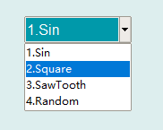

下拉列表选择控件是将一组选项纵向排列在一个下拉菜单中，供用户鼠标点击选择，然后通过回调函数形式编程定义其具体功能和操作，第一项返回值为0，其余不同选项的返回值差值为1。下拉列表选择控件的图形显示效果如下：

在Python程序GUI界面中创建一个列表选择控件的命令为:
hl=dr.DRComboBoxX(win,x,y,w,h,bg,fg,items,fontSize,num,initItem)
其中hl是创建时用户设定的变量名。下拉列表控件可以通过回调函数绑定的方式将用户的鼠标点击操作传递给绑定的回调函数，格式为：
hl.addCallBackSingle(setValueSingle)
被绑定的回调函数是一个单数值函数，收到的是所选择的条目号，其函数形式为：
def setValueSingle(v):
通过回调函数绑定方式，就可以将用户的鼠标点击操作传递到程序的回调函数中。
下拉列表选择控件是从Tkinter的ComboBox控件继承而来，因此必要时也可以通过Tkinter_ComboBox控件的属性和方法来对其进行装饰。
更多有关Tkinter_ComboBox控件的详细用法请参阅Tkinter文献。
.